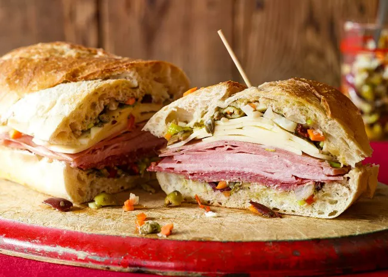

Muufuletta

Description
This is one of Italy's proud bread dishes. It was invented a century ago at Sicialian Deli in New Orleans. It consists of a halved muffuletta loaf with deli meats and olive spread
What really sets this dish apart from others is the spicy, tangy olid salad!
Ingredients
- 1 cup pimento-stuffed green olives
- ½ cup drained kalamata olives, crushed
- ½ cup pepperoncini, drained
- ¼ cup roughly chopped pickled cauliflower florets
- ¼ cup marinated cocktail onions
- 2 cloves garlic, minced
- 2 tablespoons drained capers
- 1 tablespoon chopped celery
- 1 teaspoon dried oregano
- 1 teaspoon dried basil
- ¾ teaspoon ground black pepper
- ½ teaspoon celery seed
- ½ cup olive oil
- ¼ cup canola oil
- ¼ cup red wine vinegar
- 2(1 Pound) loaves Italian bread
- 8 ounces of sliced genoa salami
- 8 ounces of thinly sliced cooked ham
- 8 ounces sliced mortadella
- 8 ounces of sliced mozzarella cheese
Directions
- To make the olive salad: Chop together the green olives, Kalatmata olives, pepperoncini, cauliflower, cocktail onions,
garlic, capers, celery, and carrot
- Combine with oregano, basil, black pepper, and celery seed in a medium bowl. Add in olive oil, canola oil, and vinegar.
Mix together and transfer the mixture into a glass jar (or other nonreactive container). Pour in more oil to cover if needed.
- Cover jar or container and refrigerate at least 8 hours to overnight.
- To make the sandwiches: Cut loaves of bread in half horizontally; hollow out some of the excess bread to make room for
filling.
- Spread each piece of bread with equal amounts of the olive salad, including oil.
- Layer bottom half of each loaf with 1/2 of the salami, ham, mortadella, mozzarella, and Provolone slices.
- Replace top half on each loaf and cut the sandwiches into quarters.
- Serve immediately, or wrap tightly and refrigerate for a few hours; this will allow for the flavors to mingle and the olive salad to soak into the bread.
Return to Main Page